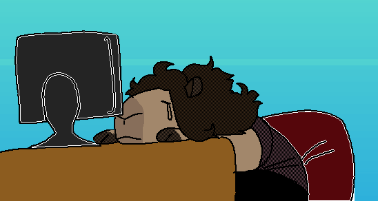

Also see MS Life, a comic Capy helped work on.
Capy Comics is the given name to a number of WebComics written, drawn, and published by Welsh Neocities user Capy. Despite Capy being represented by her fursona (a capybara), the comics deal with slice of life events, along with real world events such as with comic #10 that is about a minor earthquake that affected parts of Wales and England at the time. The comic doesn't have a set schedule and instead acts as a diary of sorts.
The current location of the comics can be found by following this URL: https://gwtagacw.neocities.org/capy/, however this has not always been the URL for the Webcomics, as an early archive from January 2018 can be found that has this URL: https://gwtagacw.neocities.org/mainsite/pages/comics.html
This page was last updated: 25/07/2018 @ 12:30
In total this page has had 3 updates since it was uploaded.